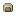

Справочник по пчеловодству
Справочник по пчеловодству
Эта глава является продолжением главы Пчеловодство.
Матка улья обладает определёнными способностями. Они передаются и изменяются при разделении улья. Новые способности можно получить только из дикой природы, за исключением Спокойствия, которое может появиться при разделении в неволе.
Список способностей
- Выносливость: Позволяет пчёлам производить мёд при более низких температурах. Каждая выносливость даёт дополнительные 2 °С.
- Производительность: Увеличивает скорость производства мёда.
- Мутант: Увеличивает вариативность черт, передаваемых при разделении роя.
- Плодовитость: Увеличивает вероятность роения.
- Сродство к культурам: Вероятность распространения небольшого количества питательных веществ на близлежащие культуры.
- Восстановление природы: Вызывает появление новых цветов и водных растений вокруг улья.
- Спокойствие: Уменьшает вероятность атаки пчёл на вас.
- Устойчивость к инфекциям: Уменьшает вероятность развития генетических заболеваний и паразитарных инфекций.
Пчёлы с высокой способностью Мутант имеют шанс развить генетическое заболевание. Пчёлы с генетическим заболеванием не могут размножаться.
Пчёлы, подверженные неподходящим условиям, могут развить паразитарные инфекции. Эти условия не связаны с их видом и могут спонтанно возникать у диких пчёл. К таким условиям относятся: соприкосновение улья с любым другим блоком, кроме блока под ним; температура ниже -18 или выше 27 °С; осадки ниже 50 или выше 470 мм. Заражённые пчёлы не могут производить мёд.
Using Blue Mold (from cheesemaking) on a hive cures brood infections. It works on all parasitic infections except Varroa, which must be escaped by swarming.
Refer to the next pages for information on bee species.
Виды пчёл
Виды пчёл встречаются в разных климатах, и их условия описывают, что вы можете получить от дикого улья или привлечённого дикого роя. Некоторые виды встречаются реже других.
- Западная медоносная пчела: Спокойствие, Производительность. 5–20 °С, 100–400 мм. Очень распространена. Западные пчёлы также появляются, когда ни один другой вид не может появиться.
- Азиатская медоносная пчела: Плодовитость, Восстановление природы. 10–30 °С, 250–400 мм. Распространена.
- Гигантская медоносная пчела: Плодовитость. 15–30 °С, 300–450 мм. Распространена.
- Карликовая медоносная пчела: Плодовитость, Производительность. 20–30 °С, 300–400 мм. Распространена.
- Чёрная карликовая медоносная пчела: Мутант, Восстановление природы. 12–22 °С, 150–350 мм. Необычна.
- Медоносная пчела Кожевникова: Выносливость, Производительность, Восстановление природы. 12–16 °С, 200–375 мм. Очень редка.
- Гималайская гигантская медоносная пчела: Выносливость, Мутант, Производительность. 10–19 °С, 150–250 мм, y>96. Редка.
- Филиппинская медоносная пчела: Спокойствие, Сродство к культурам. 15–20 °С, 350–450 мм. Очень редка.
- Борнейская горная медоносная пчела: Выносливость, Устойчивость к инфекциям. 13–22 °С, 150–400 мм, y>96. Распространена.
- Индонезийская гигантская медоносная пчела: Восстановление природы, Плодовитость, Устойчивость к инфекциям. 16–20 °С, 350–420 мм. Необычна.
- Африканизированная медоносная пчела: Выносливость. 10–25 °С. 100–320 мм. Распространена.


